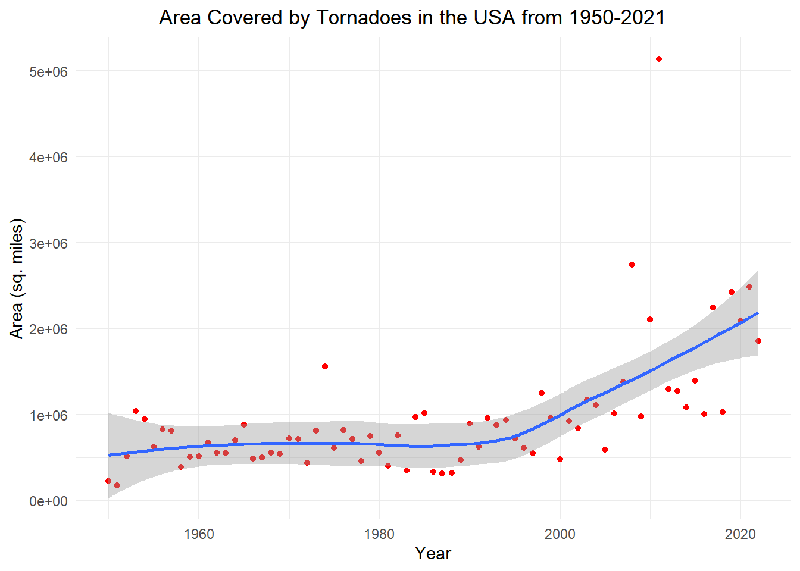
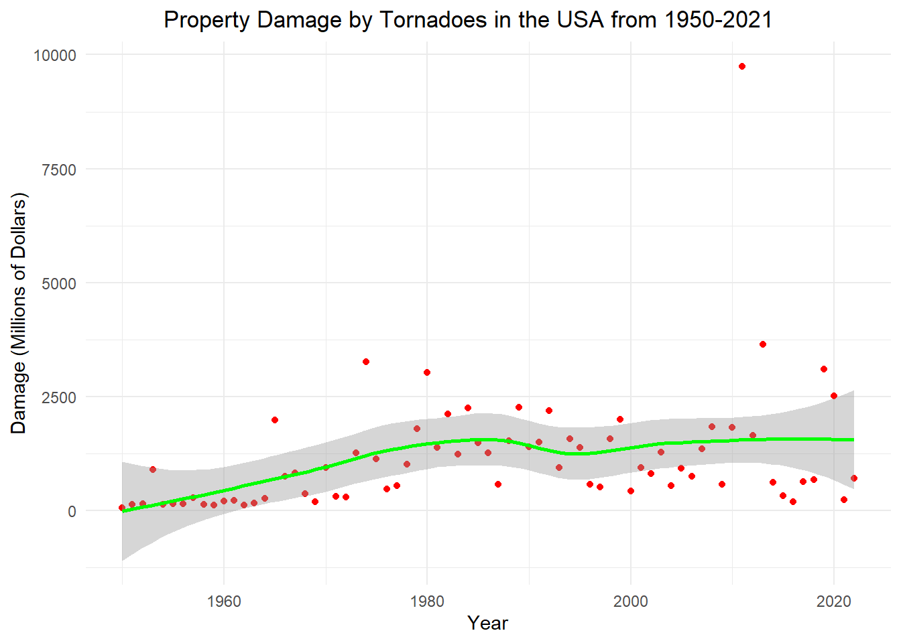
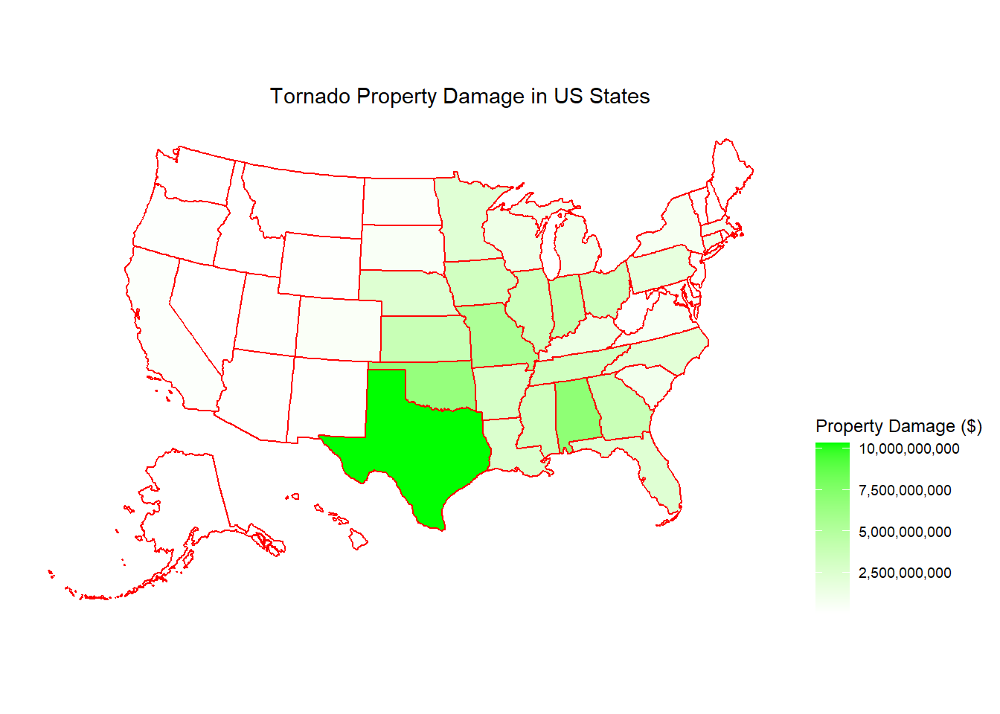

data source: https://github.com/rfordatascience/tidytuesday/tree/master/data/2023/2023-05-16
For this blog post I am working with a data set from NOAA National Weather Service Storm Prediction Center Severe Weather Maps, Graphics, and Data Page, taken from the tidy tuesday github. The data includes an id variable for each tornado, dates, times, fatalities, area, and state information. I am most interested in the year, property damage, length, width, and state variables. There are 68693 observations in the data set. My question of interest is to find out how tornadoes have affected the USA from the period 1950-2021 and which states were hit the hardest.
library(tidyverse)
── Attaching core tidyverse packages ──────────────────────── tidyverse 2.0.0 ──
✔ dplyr 1.1.4 ✔ readr 2.1.5
✔ forcats 1.0.0 ✔ stringr 1.5.1
✔ ggplot2 3.4.4 ✔ tibble 3.2.1
✔ lubridate 1.9.3 ✔ tidyr 1.3.0
✔ purrr 1.0.2
── Conflicts ────────────────────────────────────────── tidyverse_conflicts() ──
✖ dplyr::filter() masks stats::filter()
✖ dplyr::lag() masks stats::lag()
ℹ Use the conflicted package (<http://conflicted.r-lib.org/>) to force all conflicts to become errors
library(here)
here() starts at C:/Users/bkara/OneDrive - St. Lawrence University/ds334block
tornados <-read.csv(here("data/tornados.csv"))
Plot 1: Area Covered Through the Years
# create area variabledamage_tornados <- tornados %>%mutate(length_yds = len*1760) %>%mutate(area = len*wid) %>%filter(area >0) %>%group_by(yr) %>%summarise(area =sum(area))# plot year vs area graphggplot(data = damage_tornados, mapping =aes(x = yr, y = area)) +geom_point(color ="red") +geom_smooth() +theme_minimal() +labs(title ="Area Covered by Tornadoes in the USA from 1950-2021", x ="Year", y ="Area (sq. miles)") +theme(plot.title =element_text(hjust = .4))
`geom_smooth()` using method = 'loess' and formula = 'y ~ x'

Summary
In the scatterplot above, I plotted year versus area to see if total tornado area has changed during the time period from 1950-2021. According to the graph, it seems area remained roughly the same from 1950 to the mid 1990s, where area per year began a slight rise until 2021. The year 2011 seems to be an outlier, with a total tornado area of over 2,000,000 square miles above the next closest year.
Plot 2: Tornado Property Damage from 1950-2021
# get property damage per yearproperty_tornados <- tornados %>%filter(!is.na(loss)) %>%group_by(yr) %>%summarise(tot_damage =sum(loss)) %>%mutate(tot_damage = tot_damage/1000000)# graph year vs lossggplot(data = property_tornados, mapping =aes(x = yr, y = tot_damage)) +geom_point(color ="red") +geom_smooth(color ="green") +theme_minimal() +labs(title ="Property Damage by Tornadoes in the USA from 1950-2021", x ="Year", y ="Damage (Millions of Dollars)") +theme(plot.title =element_text(hjust = .4))
`geom_smooth()` using method = 'loess' and formula = 'y ~ x'

Summary
The scatterplot above displays the relationship between year and property damage in millions of dollars from tornadoes. There seems to be an increase in property damage during the mid 1960s for about 20 years until the curve flattens out again until 2021. Again, perhaps due to the large area covered by tornadoes in 2011, the year seems to be an outlier in this relationship as well, with more than twice the property damage than the next closest year.
# https://cran.r-project.org/web/packages/usmap/index.htmllibrary(usmap)plot_usmap(data = tornado_mapData, values ="damage_bystate", color ="red") +scale_fill_continuous(name ="Property Damage ($)", label = scales::comma, low ="white", high ="green") +theme(legend.position ="right") +labs(title ="Tornado Property Damage in US States") +theme(plot.title =element_text(hjust = .65))

The map above displays property damage by US state. During the period from 1950-2021, Texas, Alabama, and Oklaholma sustained the most property damage in dollars from tornadoes. Texas by far sustained the most significant damage with over $10 billion in losses over the 71 year period. Most of the states on the southeastern coast sustained significant damage, while west coast states suffered the least.
Conclusion
One of the flaws would be I never looked into the trends in the number of tornadoes over time, which could be part of the reason why there is a larger area covered by tornadoes in recent years or be a reason for an increase in property damage. I am also unsure about the accuracy in the data collection 70 years ago compared to today, there could be inaccurate data points that affect the way I analyzed the data. If I had more data/time I would look into how the tornadoes affected the economies of the states that got hit the hardest. I would also see how economics were affected in 2011, which was the year with by far the most property damage.
Class Ideas
The first two visualizations I chose to represent the data were scatterplots because you’re able to see each point data point. This allows you to see the exact trend of the data and not just general summary statistics. They are also simple scatterplots that show the data and their trends. I didn’t want to include any extra aestetic parts that might obsure the trends and make it difficult to read. I think they do a good job of maximizing the data-to-ink ratio, while still adding appropriate labels. For the map graph, I used a continuous scale to represent the property damage becuase the amount of money goes from low to high. I also thought the green color complimented the red well, making it easier to see. I chose a map becuase I thought it would be a good way to show what regions of the country were affected the most to see what areas suffered the most property damage. I also think a map would be more memorable for the viewer than another plot.